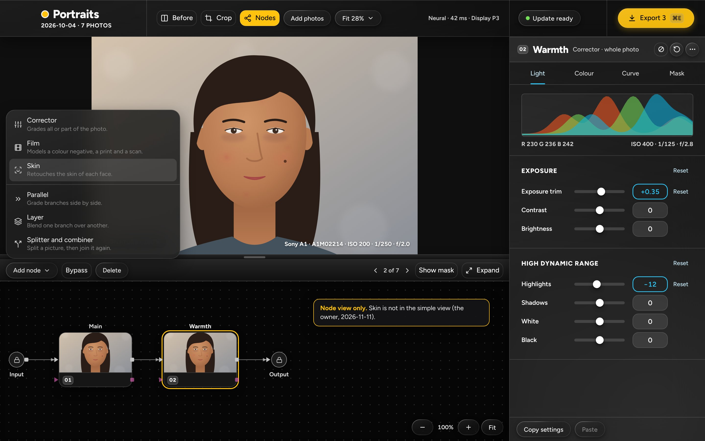
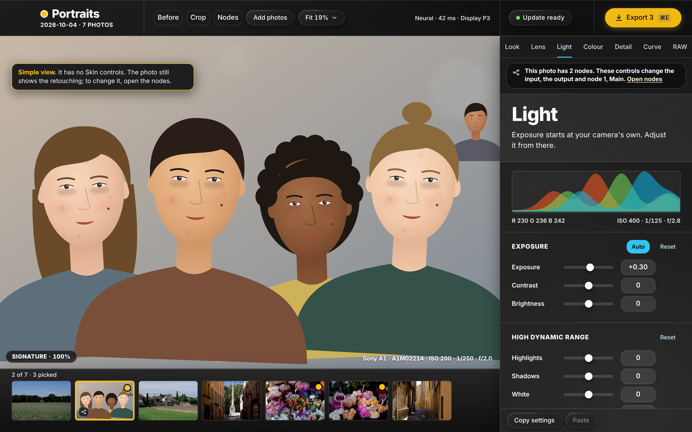
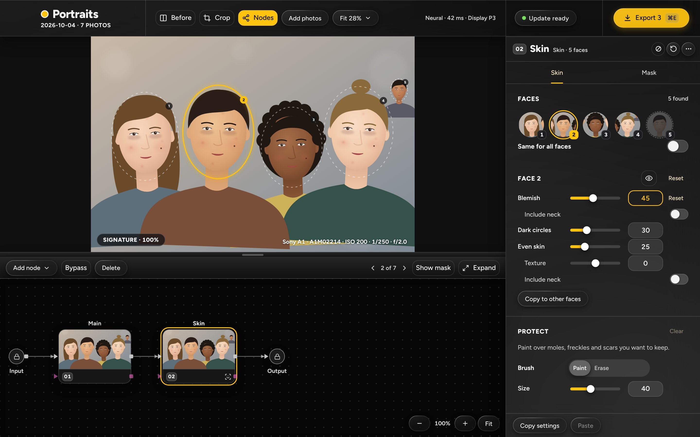
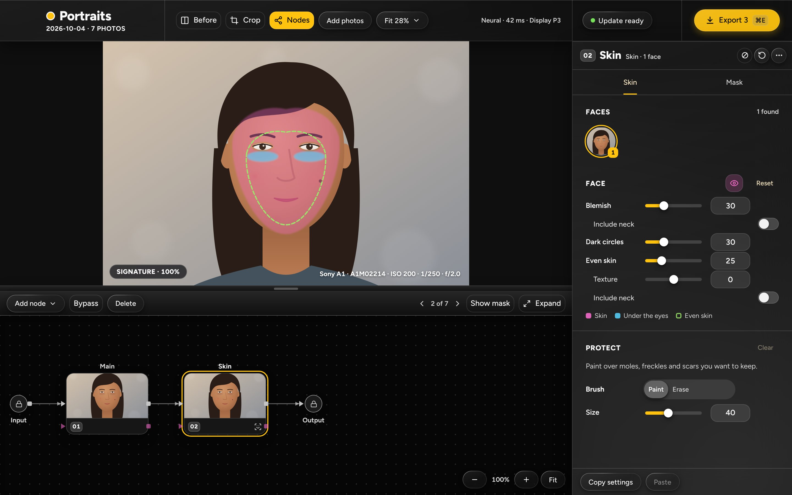
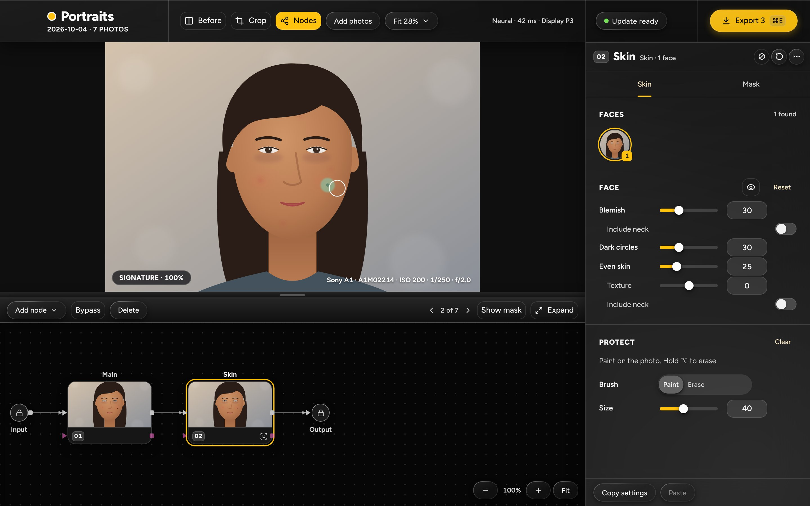
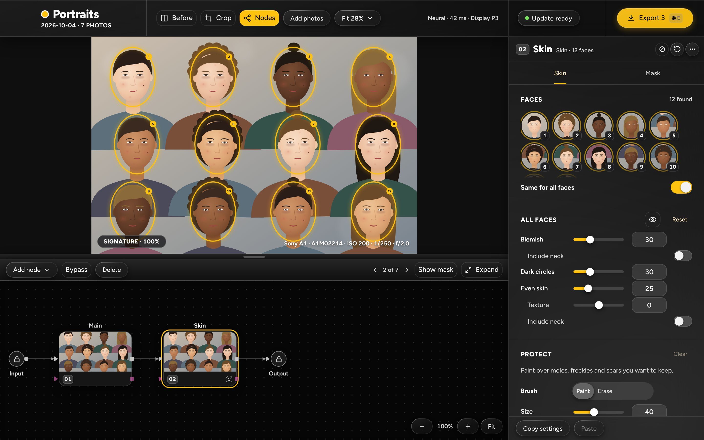
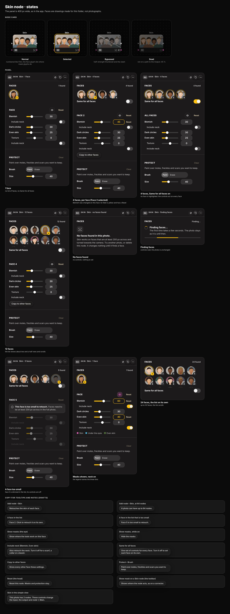

Questions for the owner are in mockup-notes.md. The ones that change the drawings most: one setting for all faces or per face by default (1), whether a new node retouches at once (2), where the protect brush lives (3), and whether Show masks stays (4).
Add node › Skin

Skin is the third item, after Film, with its icon and one line. A note says it is for the node view only.
- Skin counts as a node: the same 64-node limit and tooltip.
The simple view

No Skin controls and no new tab. The panel's existing note says the photo has nodes and offers Open nodes.
Skin node, per face

Main → Skin → Output. Face 2 is selected: a yellow ring on the photo and in the list. Its Blemish is 45, changed from the default 30; Copy to other faces gives the rest the same.
- Face 5, the small one in the back, is in the list too (see the states sheet).
- The protect card is below the face controls and scrolls into view.
One face, Show masks on

The eye in the face card tints the skin (pink), under the eyes (blue) and the even-skin core (green outline), with a legend.
The protect brush

A stroke round the mole, and the brush cursor. "2 strokes" in the card; Clear is on.
Twelve faces, same for all

Every face is ringed on the photo and in the list; the list scrolls after two rows. The card is titled All faces.
States sheet

Node card states; the panel with 1, 4, 12 and 24 faces, no faces, finding faces, a face too small, masks shown with the neck on; the copy for tooltips.